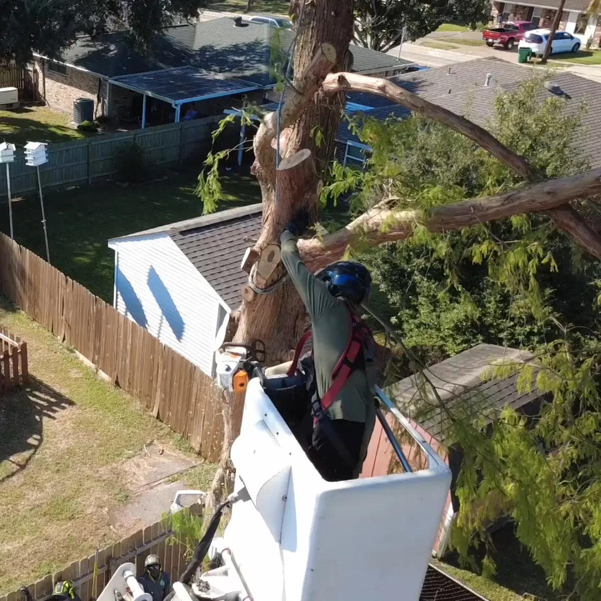
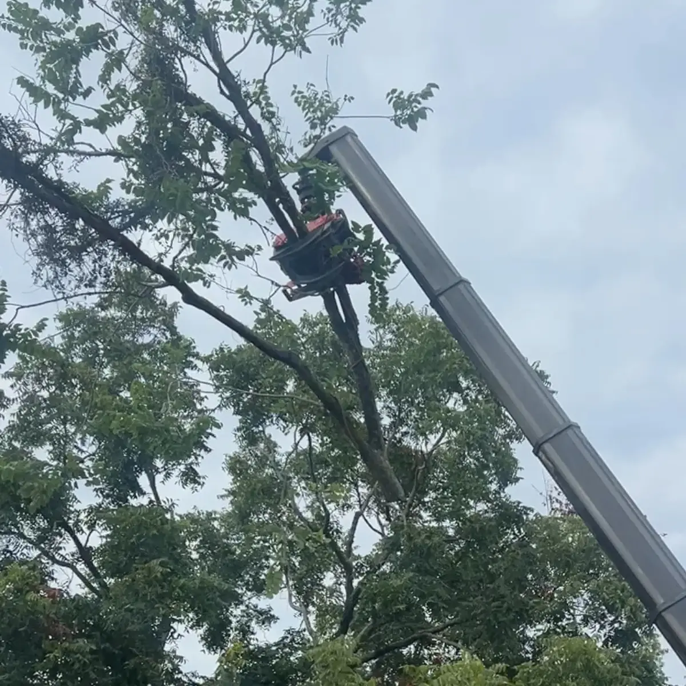
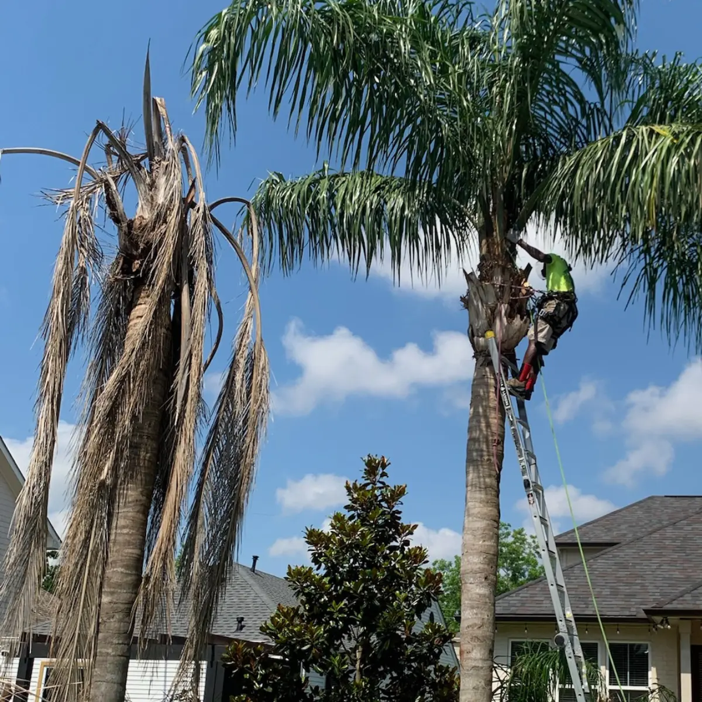
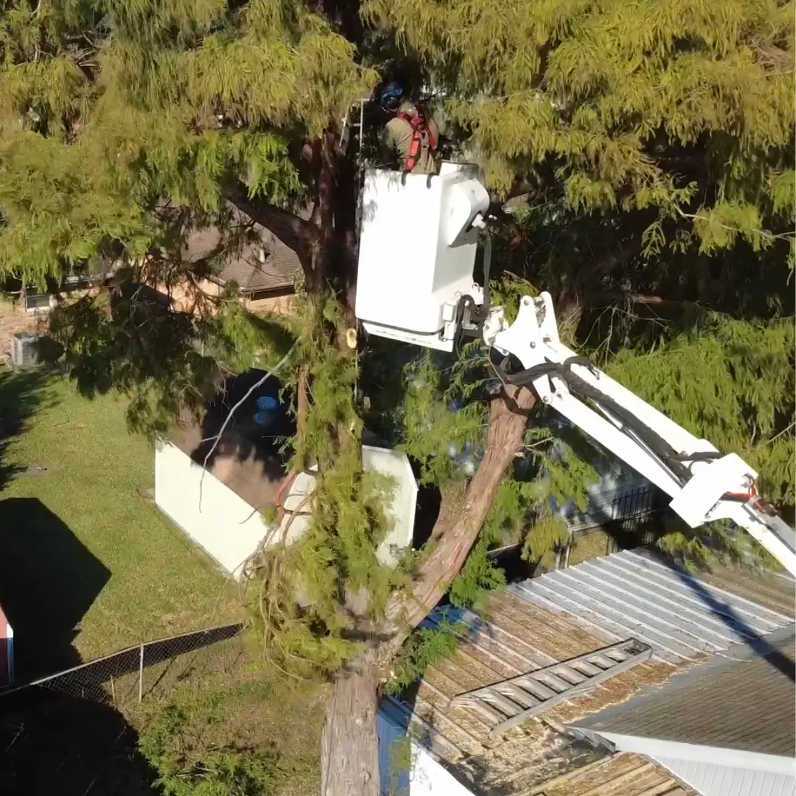
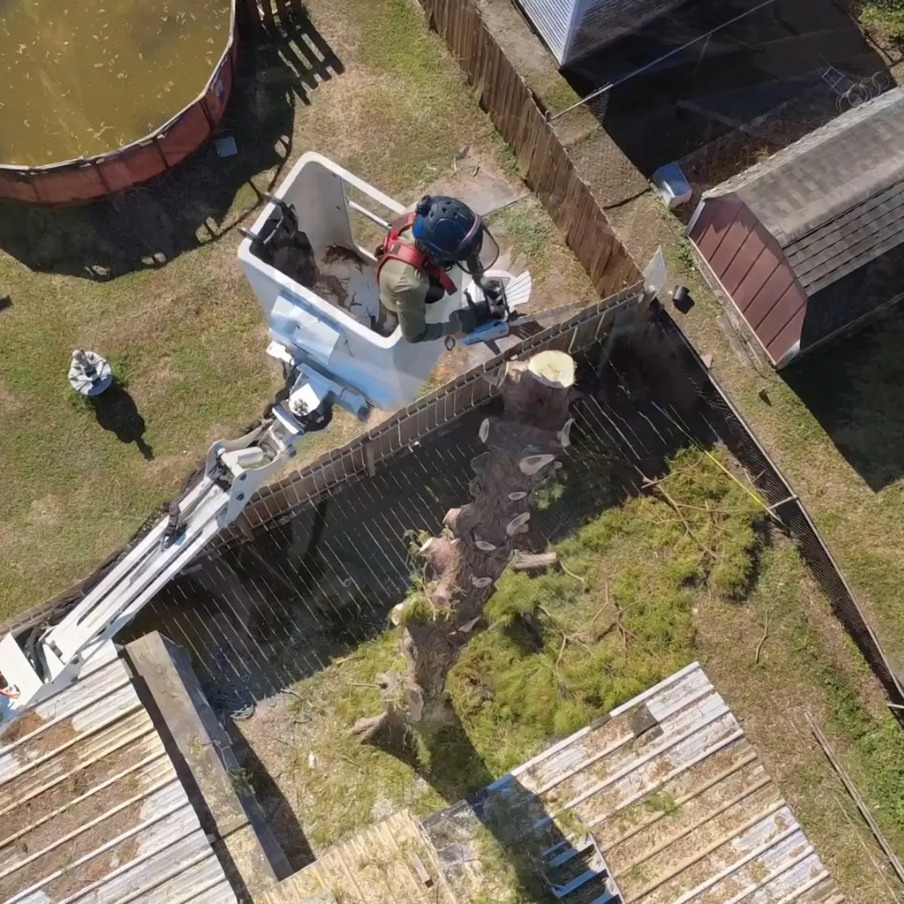

Tree Care Services
Our Tree Services in New Orleans LA. Not sure which service fits? Choose “I’m not sure what my tree needs” and an arborist can assess whether pruning, stabilization, or removal makes sense.
Urgent or unsafe? Call (504) 732-0779
- ISA Certified Arborist PN-8583A
- Louisiana Licensed Arborist #1486
- Tree care since 2006
- Calls answered 24/7

Tree Removal
A Perfect Cut provides safe, efficient tree removal for dead, damaged, or unwanted trees, using advanced equipment and expert techniques to protect your property and landscape.
Get My Arborist Review
Tree Trimming
Our tree trimming service enhances tree health, improves curb appeal, and reduces risk by removing dead or overgrown branches with precision and care.
Get My Arborist Review
Consulting & Construction Permitting
We help homeowners and contractors navigate local tree regulations, offering expert advice and handling permits for construction projects involving tree removal or preservation.
Get My Arborist Review
Emergency Tree Removal and Cleanup
When storm damage or a fallen tree puts your property at risk, our crew handles safe removal and thorough cleanup.
Get My Arborist Review
Hazardous Tree Assessment
We assess trees for structural issues, disease, or instability to identify risks and recommend proactive solutions.
Get My Arborist Review
Storm Prep & Support
We secure vulnerable trees, remove weak limbs, and provide post-storm cleanup to protect your property before and after severe weather.
Get My Arborist Review
Stump Grinding
Our stump grinding service removes unsightly stumps below ground level, restoring your landscape and preventing regrowth.
Get My Arborist Review
Tree & Stump Removal
We safely remove unwanted or dangerous trees and grind the stumps, leaving your yard clean and hazard-free.
Get My Arborist Review
Tree & Shrub Pruning
We trim trees and shrubs to promote healthy growth, improve appearance, and reduce the risk of damage from overgrown limbs.
Get My Arborist Review
Tree Fertilization
Our deep-root fertilization services provide essential nutrients to improve tree health, boost growth, and resist disease.
Get My Arborist Review
Tree Planting
We help you select and plant the right trees for your property, ensuring proper placement and long-term health.
Get My Arborist Review
Tree Preservation
We protect mature and valuable trees through root zone care, pruning, and soil management to ensure longevity and vitality.
Get My Arborist ReviewWhat to Photograph From a Safe Distance
Photos and video show us the tree, the property around it, how we would reach it, and any visible hazards.




Tree down or a limb on a line?
Skip the photos and call. Calls are answered 24/7.
(504) 732-0779Office hours: Monday to Friday 7 AM to 5 PM, Saturday 7 AM to 3 PM, closed Sunday.

Ready to Show Us Your Tree?
Show us the tree. An arborist reviews what you send. Photos give us a first look. Some trees need an in-person visit before we can make a final recommendation.